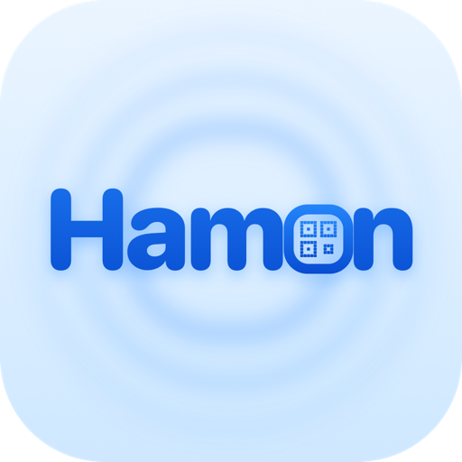
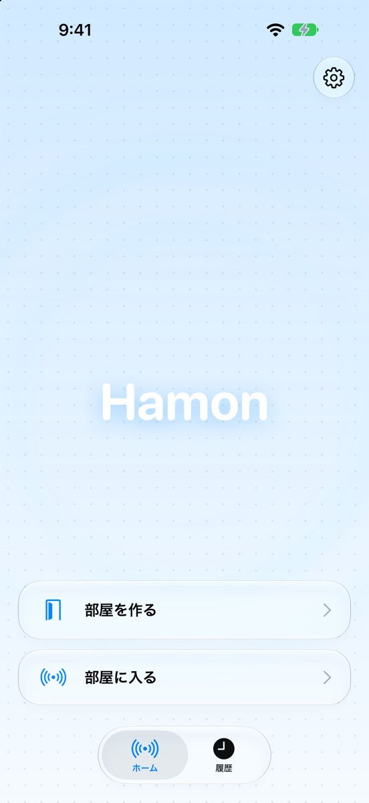
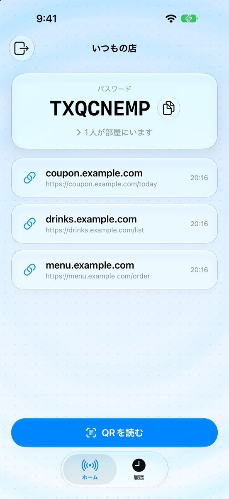
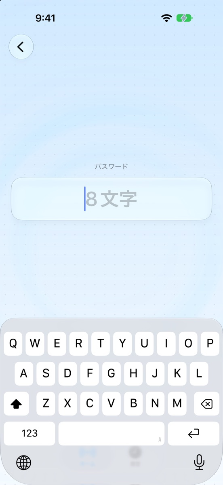
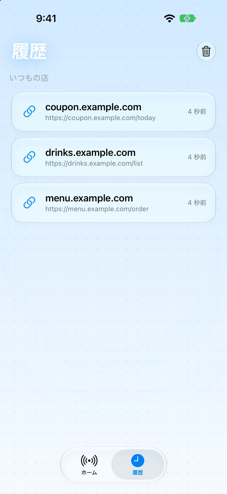

波紋のように
みんなに届ける
テーブルのQRコードを誰かが読むと
そのリンクが近くの仲間のスマホへそっと届きます。
- 開いておくだけ
- いつもの仲間なら、アプリを開いておくだけで同じ部屋に入れます。
- となり同士で直接
- サーバーを通さず、近くのスマホ同士でやりとりします。
- 12時間で消える
- 届いたリンクは12時間で自動で消えます。
こんなQRコードに
- お店の注文ひとりが読めば、みんなが自分で注文できます。
- アンケートその場の全員に、まとめて届けます。
- 資料のリンク配られた資料やスライドを、すぐ共有できます。
- 連絡先の交換SNSの友だち追加のQRコードを、その場のみんなに。




iPhone向けに近日公開します
水面に触れてみてください